| Name | Structure | Mass1 | Mass2 | Mass3 | Time | m/z- | m/z+ | Best Well | Purity of Best Well | Overlap Detection | Potential Conflicts |
|---|---|---|---|---|---|---|---|---|---|---|---|
| Product1 |
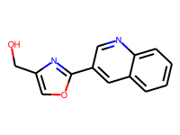 |
226.07 | 0.0 | 0 | 0.71 | 225.1 | 227.24 | D6 | 70.51 | No peak overlap detected. | No potential conflicts found. |
| Reactant1 |
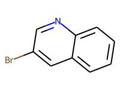 |
206.97 | 208.97 | 0 | 1.04 | 206.29 | 208.11 | C10 | 61.89 | No peak overlap detected. | No potential conflicts found. |
| Dibenzylaniline |
 |
273.15 | 0.0 | 0 | 1.49 | - | 274.28 | D10 | 23.31 | No peak overlap detected. | No potential conflicts found. |
Compound Detail
Product1
92 hits were found for Product1.
4 clusters were found for Product1.
The tentative peak at 0.7103 in well D8 was used as there was no better option. User should check this well.
The tentative peak at 0.7103 in well D12 was used as there was no better option. User should check this well.
The tentative peak at 0.7107 in well D3 was used as there was no better option. User should check this well.
The tentative peak at 0.7107 in well D6 was used as there was no better option. User should check this well.
The tentative peak at 0.7111 in well C2 was used as there was no better option. User should check this well.
The tentative peak at 0.734 in well B9 was used as there was no better option. User should check this well.
4 clusters were found for Product1.
The tentative peak at 0.7103 in well D8 was used as there was no better option. User should check this well.
The tentative peak at 0.7103 in well D12 was used as there was no better option. User should check this well.
The tentative peak at 0.7107 in well D3 was used as there was no better option. User should check this well.
The tentative peak at 0.7107 in well D6 was used as there was no better option. User should check this well.
The tentative peak at 0.7111 in well C2 was used as there was no better option. User should check this well.
The tentative peak at 0.734 in well B9 was used as there was no better option. User should check this well.
0 hits were discarded from cluster 0 for Product1 as a result of refinement by retention time.
UV data was not found for the plate, so UV validation was not performed.
0 hits were marked as tentative from cluster 0 for Product1 as a result of refinement by UV maxima.
0 hits were marked as tentative from cluster 0 for Product1 as a result of refinement by mass confidence.
Peak at 0.7098 in well D9 was discarded as there was an alternative peak in the same well which was closer to the mid-point of the cluster.
Peak at 0.7103 in well C8 was discarded as there was an alternative peak in the same well which was closer to the mid-point of the cluster.
Peak at 0.7103 in well C9 was discarded as there was an alternative peak in the same well which was closer to the mid-point of the cluster.
Peak at 0.7103 in well C11 was discarded as there was an alternative peak in the same well which was closer to the mid-point of the cluster.
Peak at 0.7103 in well D7 was discarded as there was an alternative peak in the same well which was closer to the mid-point of the cluster.
Peak at 0.7103 in well D11 was discarded as there was an alternative peak in the same well which was closer to the mid-point of the cluster.
Peak at 0.7107 in well C5 was discarded as there was an alternative peak in the same well which was closer to the mid-point of the cluster.
Peak at 0.7107 in well C7 was discarded as there was an alternative peak in the same well which was closer to the mid-point of the cluster.
Peak at 0.7107 in well C12 was discarded as there was an alternative peak in the same well which was closer to the mid-point of the cluster.
Peak at 0.7107 in well D1 was discarded as there was an alternative peak in the same well which was closer to the mid-point of the cluster.
Peak at 0.7107 in well D4 was discarded as there was an alternative peak in the same well which was closer to the mid-point of the cluster.
Peak at 0.7107 in well D5 was discarded as there was an alternative peak in the same well which was closer to the mid-point of the cluster.
Peak at 0.7107 in well D10 was discarded as there was an alternative peak in the same well which was closer to the mid-point of the cluster.
Peak at 0.7111 in well B5 was discarded as there was an alternative peak in the same well which was closer to the mid-point of the cluster.
Peak at 0.7111 in well C1 was discarded as there was an alternative peak in the same well which was closer to the mid-point of the cluster.
Peak at 0.7111 in well C3 was discarded as there was an alternative peak in the same well which was closer to the mid-point of the cluster.
Peak at 0.7111 in well C4 was discarded as there was an alternative peak in the same well which was closer to the mid-point of the cluster.
Peak at 0.7111 in well C6 was discarded as there was an alternative peak in the same well which was closer to the mid-point of the cluster.
Peak at 0.7111 in well C10 was discarded as there was an alternative peak in the same well which was closer to the mid-point of the cluster.
Peak at 0.7115 in well A6 was discarded as there was an alternative peak in the same well which was closer to the mid-point of the cluster.
Peak at 0.7115 in well B6 was discarded as there was an alternative peak in the same well which was closer to the mid-point of the cluster.
Peak at 0.7132 in well D2 was discarded as there was an alternative peak in the same well which was closer to the mid-point of the cluster.
Peak at 0.7178 in well B2 was discarded as there was an alternative peak in the same well which was closer to the mid-point of the cluster.
Peak at 0.7103 in well D8 was marked as tentative as it was found to be too far from the mid-value of the cluster.
Peak at 0.7103 in well D12 was marked as tentative as it was found to be too far from the mid-value of the cluster.
Peak at 0.7107 in well D3 was marked as tentative as it was found to be too far from the mid-value of the cluster.
Peak at 0.7107 in well D6 was marked as tentative as it was found to be too far from the mid-value of the cluster.
Peak at 0.7111 in well C2 was marked as tentative as it was found to be too far from the mid-value of the cluster.
23 hits were discarded from cluster 1 for Product1 as a result of refinement by retention time.
UV data was not found for the plate, so UV validation was not performed.
0 hits were marked as tentative from cluster 1 for Product1 as a result of refinement by UV maxima.
Peak at 0.734 in well B9 was marked tentative due to poor mass confidence in comparison to the rest of the cluster.
0 hits were marked as tentative from cluster 1 for Product1 as a result of refinement by mass confidence.
Peak at 0.8036 in well D8 was discarded as there was an alternative peak in the same well which was closer to the mid-point of the cluster.
Peak at 0.8036 in well D9 was discarded as there was an alternative peak in the same well which was closer to the mid-point of the cluster.
2 hits were discarded from cluster 2 for Product1 as a result of refinement by retention time.
UV data was not found for the plate, so UV validation was not performed.
0 hits were marked as tentative from cluster 2 for Product1 as a result of refinement by UV maxima.
Peak at 0.7861 in well C11 was marked tentative due to poor mass confidence in comparison to the rest of the cluster.
Peak at 0.7861 in well D7 was marked tentative due to poor mass confidence in comparison to the rest of the cluster.
Peak at 0.7861 in well D9 was marked tentative due to poor mass confidence in comparison to the rest of the cluster.
0 hits were marked as tentative from cluster 2 for Product1 as a result of refinement by mass confidence.
0 hits were discarded from cluster 3 for Product1 as a result of refinement by retention time.
UV data was not found for the plate, so UV validation was not performed.
0 hits were marked as tentative from cluster 3 for Product1 as a result of refinement by UV maxima.
0 hits were marked as tentative from cluster 3 for Product1 as a result of refinement by mass confidence.
0 clusters were discarded after refinement by mass confidence.
3 clusters were discarded after refinement by size comparison.
UV data was not found for the plate, so UV validation was not performed.
0 hits were marked as tentative from cluster 0 for Product1 as a result of refinement by UV maxima.
0 hits were marked as tentative from cluster 0 for Product1 as a result of refinement by mass confidence.
Peak at 0.7098 in well D9 was discarded as there was an alternative peak in the same well which was closer to the mid-point of the cluster.
Peak at 0.7103 in well C8 was discarded as there was an alternative peak in the same well which was closer to the mid-point of the cluster.
Peak at 0.7103 in well C9 was discarded as there was an alternative peak in the same well which was closer to the mid-point of the cluster.
Peak at 0.7103 in well C11 was discarded as there was an alternative peak in the same well which was closer to the mid-point of the cluster.
Peak at 0.7103 in well D7 was discarded as there was an alternative peak in the same well which was closer to the mid-point of the cluster.
Peak at 0.7103 in well D11 was discarded as there was an alternative peak in the same well which was closer to the mid-point of the cluster.
Peak at 0.7107 in well C5 was discarded as there was an alternative peak in the same well which was closer to the mid-point of the cluster.
Peak at 0.7107 in well C7 was discarded as there was an alternative peak in the same well which was closer to the mid-point of the cluster.
Peak at 0.7107 in well C12 was discarded as there was an alternative peak in the same well which was closer to the mid-point of the cluster.
Peak at 0.7107 in well D1 was discarded as there was an alternative peak in the same well which was closer to the mid-point of the cluster.
Peak at 0.7107 in well D4 was discarded as there was an alternative peak in the same well which was closer to the mid-point of the cluster.
Peak at 0.7107 in well D5 was discarded as there was an alternative peak in the same well which was closer to the mid-point of the cluster.
Peak at 0.7107 in well D10 was discarded as there was an alternative peak in the same well which was closer to the mid-point of the cluster.
Peak at 0.7111 in well B5 was discarded as there was an alternative peak in the same well which was closer to the mid-point of the cluster.
Peak at 0.7111 in well C1 was discarded as there was an alternative peak in the same well which was closer to the mid-point of the cluster.
Peak at 0.7111 in well C3 was discarded as there was an alternative peak in the same well which was closer to the mid-point of the cluster.
Peak at 0.7111 in well C4 was discarded as there was an alternative peak in the same well which was closer to the mid-point of the cluster.
Peak at 0.7111 in well C6 was discarded as there was an alternative peak in the same well which was closer to the mid-point of the cluster.
Peak at 0.7111 in well C10 was discarded as there was an alternative peak in the same well which was closer to the mid-point of the cluster.
Peak at 0.7115 in well A6 was discarded as there was an alternative peak in the same well which was closer to the mid-point of the cluster.
Peak at 0.7115 in well B6 was discarded as there was an alternative peak in the same well which was closer to the mid-point of the cluster.
Peak at 0.7132 in well D2 was discarded as there was an alternative peak in the same well which was closer to the mid-point of the cluster.
Peak at 0.7178 in well B2 was discarded as there was an alternative peak in the same well which was closer to the mid-point of the cluster.
Peak at 0.7103 in well D8 was marked as tentative as it was found to be too far from the mid-value of the cluster.
Peak at 0.7103 in well D12 was marked as tentative as it was found to be too far from the mid-value of the cluster.
Peak at 0.7107 in well D3 was marked as tentative as it was found to be too far from the mid-value of the cluster.
Peak at 0.7107 in well D6 was marked as tentative as it was found to be too far from the mid-value of the cluster.
Peak at 0.7111 in well C2 was marked as tentative as it was found to be too far from the mid-value of the cluster.
23 hits were discarded from cluster 1 for Product1 as a result of refinement by retention time.
UV data was not found for the plate, so UV validation was not performed.
0 hits were marked as tentative from cluster 1 for Product1 as a result of refinement by UV maxima.
Peak at 0.734 in well B9 was marked tentative due to poor mass confidence in comparison to the rest of the cluster.
0 hits were marked as tentative from cluster 1 for Product1 as a result of refinement by mass confidence.
Peak at 0.8036 in well D8 was discarded as there was an alternative peak in the same well which was closer to the mid-point of the cluster.
Peak at 0.8036 in well D9 was discarded as there was an alternative peak in the same well which was closer to the mid-point of the cluster.
2 hits were discarded from cluster 2 for Product1 as a result of refinement by retention time.
UV data was not found for the plate, so UV validation was not performed.
0 hits were marked as tentative from cluster 2 for Product1 as a result of refinement by UV maxima.
Peak at 0.7861 in well C11 was marked tentative due to poor mass confidence in comparison to the rest of the cluster.
Peak at 0.7861 in well D7 was marked tentative due to poor mass confidence in comparison to the rest of the cluster.
Peak at 0.7861 in well D9 was marked tentative due to poor mass confidence in comparison to the rest of the cluster.
0 hits were marked as tentative from cluster 2 for Product1 as a result of refinement by mass confidence.
0 hits were discarded from cluster 3 for Product1 as a result of refinement by retention time.
UV data was not found for the plate, so UV validation was not performed.
0 hits were marked as tentative from cluster 3 for Product1 as a result of refinement by UV maxima.
0 hits were marked as tentative from cluster 3 for Product1 as a result of refinement by mass confidence.
0 clusters were discarded after refinement by mass confidence.
3 clusters were discarded after refinement by size comparison.
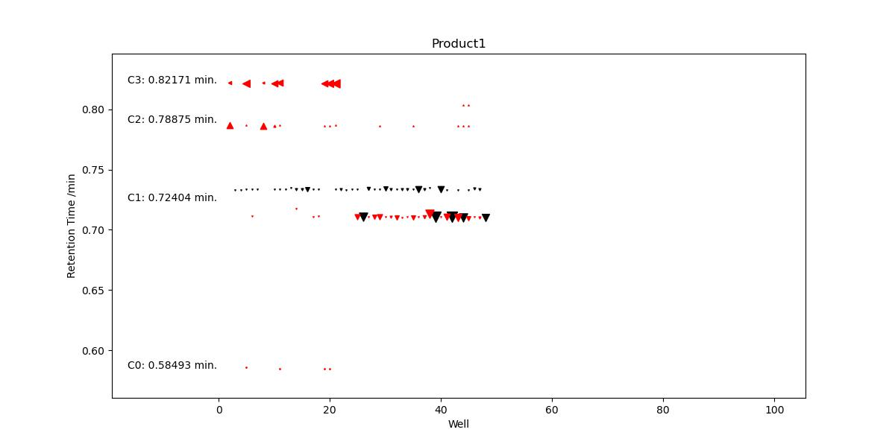
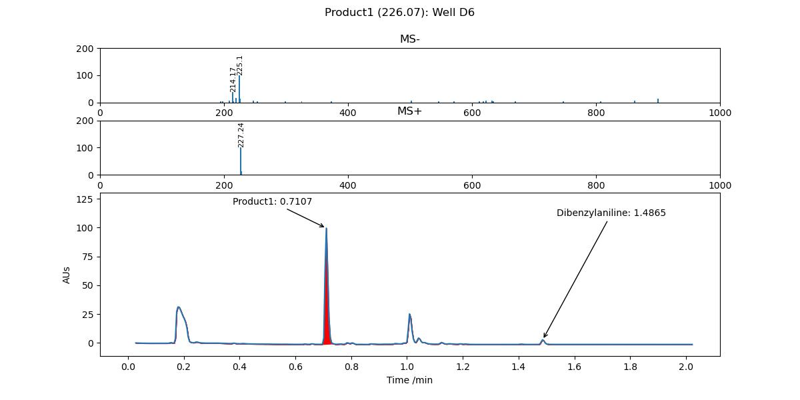
Reactant1
13 hits were found for Reactant1.
4 clusters were found for Reactant1.
The tentative peak at 1.0428 in well D5 was used as there was no better option. User should check this well.
The tentative peak at 1.0432 in well B3 was used as there was no better option. User should check this well.
The tentative peak at 1.0432 in well D10 was used as there was no better option. User should check this well.
4 clusters were found for Reactant1.
The tentative peak at 1.0428 in well D5 was used as there was no better option. User should check this well.
The tentative peak at 1.0432 in well B3 was used as there was no better option. User should check this well.
The tentative peak at 1.0432 in well D10 was used as there was no better option. User should check this well.
0 hits were discarded from cluster 0 for Reactant1 as a result of refinement by retention time.
UV data was not found for the plate, so UV validation was not performed.
0 hits were marked as tentative from cluster 0 for Reactant1 as a result of refinement by UV maxima.
0 hits were marked as tentative from cluster 0 for Reactant1 as a result of refinement by mass confidence.
Peak at 1.0607 in well D5 was discarded as there was an alternative peak in the same well which was closer to the mid-point of the cluster.
Peak at 1.0611 in well B3 was discarded as there was an alternative peak in the same well which was closer to the mid-point of the cluster.
2 hits were discarded from cluster 1 for Reactant1 as a result of refinement by retention time.
UV data was not found for the plate, so UV validation was not performed.
0 hits were marked as tentative from cluster 1 for Reactant1 as a result of refinement by UV maxima.
Peak at 1.0428 in well D5 was marked tentative due to poor mass confidence in comparison to the rest of the cluster.
Peak at 1.0432 in well B3 was marked tentative due to poor mass confidence in comparison to the rest of the cluster.
Peak at 1.0432 in well D10 was marked tentative due to poor mass confidence in comparison to the rest of the cluster.
0 hits were marked as tentative from cluster 1 for Reactant1 as a result of refinement by mass confidence.
0 hits were discarded from cluster 2 for Reactant1 as a result of refinement by retention time.
UV data was not found for the plate, so UV validation was not performed.
0 hits were marked as tentative from cluster 2 for Reactant1 as a result of refinement by UV maxima.
0 hits were marked as tentative from cluster 2 for Reactant1 as a result of refinement by mass confidence.
0 hits were discarded from cluster 3 for Reactant1 as a result of refinement by retention time.
UV data was not found for the plate, so UV validation was not performed.
0 hits were marked as tentative from cluster 3 for Reactant1 as a result of refinement by UV maxima.
0 hits were marked as tentative from cluster 3 for Reactant1 as a result of refinement by mass confidence.
2 clusters were discarded after refinement by mass confidence.
1 clusters were discarded after refinement by size comparison.
UV data was not found for the plate, so UV validation was not performed.
0 hits were marked as tentative from cluster 0 for Reactant1 as a result of refinement by UV maxima.
0 hits were marked as tentative from cluster 0 for Reactant1 as a result of refinement by mass confidence.
Peak at 1.0607 in well D5 was discarded as there was an alternative peak in the same well which was closer to the mid-point of the cluster.
Peak at 1.0611 in well B3 was discarded as there was an alternative peak in the same well which was closer to the mid-point of the cluster.
2 hits were discarded from cluster 1 for Reactant1 as a result of refinement by retention time.
UV data was not found for the plate, so UV validation was not performed.
0 hits were marked as tentative from cluster 1 for Reactant1 as a result of refinement by UV maxima.
Peak at 1.0428 in well D5 was marked tentative due to poor mass confidence in comparison to the rest of the cluster.
Peak at 1.0432 in well B3 was marked tentative due to poor mass confidence in comparison to the rest of the cluster.
Peak at 1.0432 in well D10 was marked tentative due to poor mass confidence in comparison to the rest of the cluster.
0 hits were marked as tentative from cluster 1 for Reactant1 as a result of refinement by mass confidence.
0 hits were discarded from cluster 2 for Reactant1 as a result of refinement by retention time.
UV data was not found for the plate, so UV validation was not performed.
0 hits were marked as tentative from cluster 2 for Reactant1 as a result of refinement by UV maxima.
0 hits were marked as tentative from cluster 2 for Reactant1 as a result of refinement by mass confidence.
0 hits were discarded from cluster 3 for Reactant1 as a result of refinement by retention time.
UV data was not found for the plate, so UV validation was not performed.
0 hits were marked as tentative from cluster 3 for Reactant1 as a result of refinement by UV maxima.
0 hits were marked as tentative from cluster 3 for Reactant1 as a result of refinement by mass confidence.
2 clusters were discarded after refinement by mass confidence.
1 clusters were discarded after refinement by size comparison.
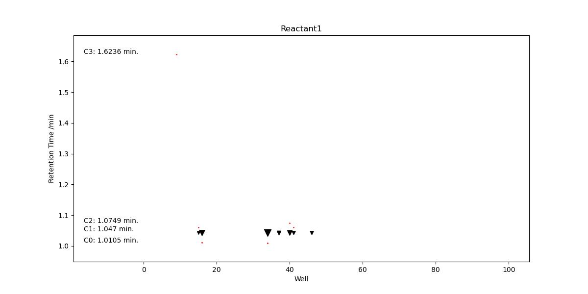
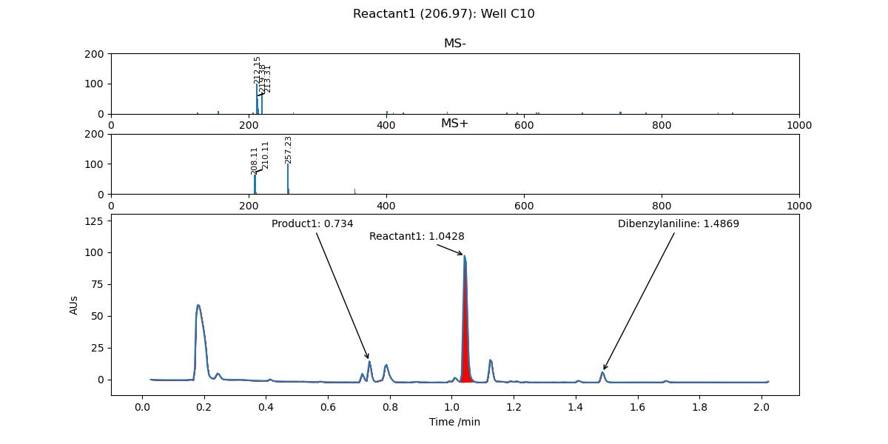
Dibenzylaniline
59 hits were found for Dibenzylaniline.
4 clusters were found for Dibenzylaniline.
4 clusters were found for Dibenzylaniline.
Peak at 1.1265 in well A5 was discarded as there was an alternative peak in the same well which was closer to the mid-point of the cluster.
Peak at 1.1257 in well B7 was discarded as there was an alternative peak in the same well which was closer to the mid-point of the cluster.
Peak at 1.1253 in well B8 was discarded as there was an alternative peak in the same well which was closer to the mid-point of the cluster.
Peak at 1.1257 in well B9 was discarded as there was an alternative peak in the same well which was closer to the mid-point of the cluster.
4 hits were discarded from cluster 0 for Dibenzylaniline as a result of refinement by retention time.
UV data was not found for the plate, so UV validation was not performed.
0 hits were marked as tentative from cluster 0 for Dibenzylaniline as a result of refinement by UV maxima.
0 hits were marked as tentative from cluster 0 for Dibenzylaniline as a result of refinement by mass confidence.
0 hits were discarded from cluster 1 for Dibenzylaniline as a result of refinement by retention time.
UV data was not found for the plate, so UV validation was not performed.
0 hits were marked as tentative from cluster 1 for Dibenzylaniline as a result of refinement by UV maxima.
0 hits were marked as tentative from cluster 1 for Dibenzylaniline as a result of refinement by mass confidence.
0 hits were discarded from cluster 2 for Dibenzylaniline as a result of refinement by retention time.
UV data was not found for the plate, so UV validation was not performed.
0 hits were marked as tentative from cluster 2 for Dibenzylaniline as a result of refinement by UV maxima.
0 hits were marked as tentative from cluster 2 for Dibenzylaniline as a result of refinement by mass confidence.
0 hits were discarded from cluster 3 for Dibenzylaniline as a result of refinement by retention time.
UV data was not found for the plate, so UV validation was not performed.
0 hits were marked as tentative from cluster 3 for Dibenzylaniline as a result of refinement by UV maxima.
0 hits were marked as tentative from cluster 3 for Dibenzylaniline as a result of refinement by mass confidence.
3 clusters were discarded after refinement by mass confidence.
Peak at 1.1257 in well B7 was discarded as there was an alternative peak in the same well which was closer to the mid-point of the cluster.
Peak at 1.1253 in well B8 was discarded as there was an alternative peak in the same well which was closer to the mid-point of the cluster.
Peak at 1.1257 in well B9 was discarded as there was an alternative peak in the same well which was closer to the mid-point of the cluster.
4 hits were discarded from cluster 0 for Dibenzylaniline as a result of refinement by retention time.
UV data was not found for the plate, so UV validation was not performed.
0 hits were marked as tentative from cluster 0 for Dibenzylaniline as a result of refinement by UV maxima.
0 hits were marked as tentative from cluster 0 for Dibenzylaniline as a result of refinement by mass confidence.
0 hits were discarded from cluster 1 for Dibenzylaniline as a result of refinement by retention time.
UV data was not found for the plate, so UV validation was not performed.
0 hits were marked as tentative from cluster 1 for Dibenzylaniline as a result of refinement by UV maxima.
0 hits were marked as tentative from cluster 1 for Dibenzylaniline as a result of refinement by mass confidence.
0 hits were discarded from cluster 2 for Dibenzylaniline as a result of refinement by retention time.
UV data was not found for the plate, so UV validation was not performed.
0 hits were marked as tentative from cluster 2 for Dibenzylaniline as a result of refinement by UV maxima.
0 hits were marked as tentative from cluster 2 for Dibenzylaniline as a result of refinement by mass confidence.
0 hits were discarded from cluster 3 for Dibenzylaniline as a result of refinement by retention time.
UV data was not found for the plate, so UV validation was not performed.
0 hits were marked as tentative from cluster 3 for Dibenzylaniline as a result of refinement by UV maxima.
0 hits were marked as tentative from cluster 3 for Dibenzylaniline as a result of refinement by mass confidence.
3 clusters were discarded after refinement by mass confidence.
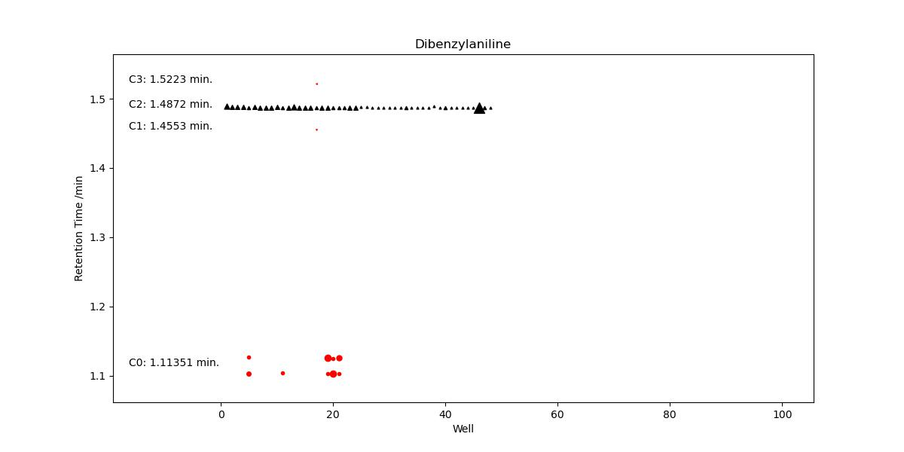
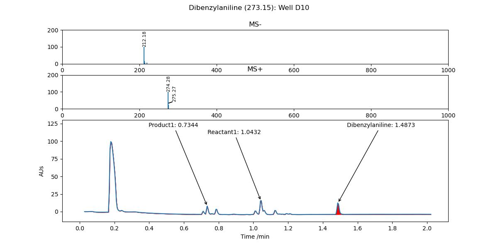
Impurity Summary
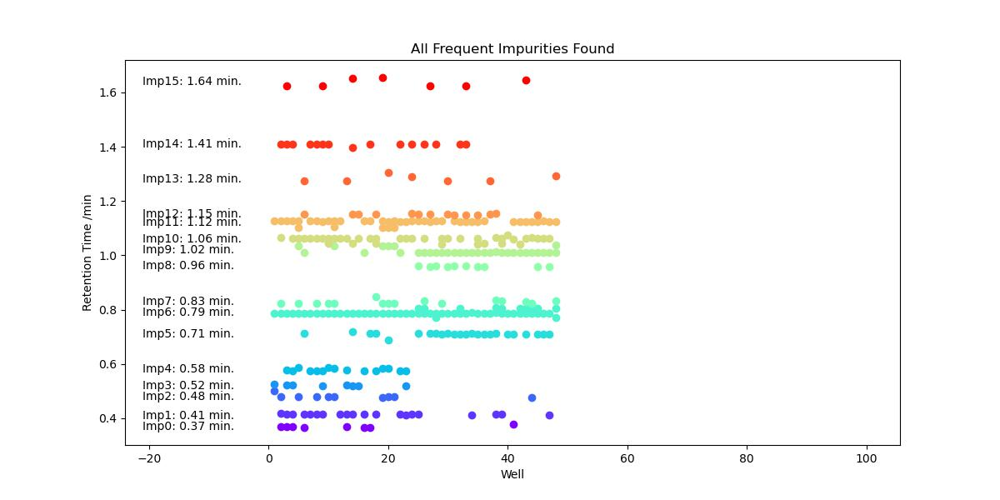
| Name | Locations | Retention Time | m/z- | m/z+ | Best Well | Purity of Best Well |
|---|---|---|---|---|---|---|
| Impurity0 | 0.37 | [] | [231.28, 243.21, 244.23, 292.24, 293.18] | A3 | 7.33 | |
| Impurity1 | 0.41 | [172.07] | [120.17, 174.15, 175.18, 214.19, 231.27] | B2 | 8.97 | |
| Impurity2 | 0.48 | [144.07] | [146.14, 147.15] | A5 | 25.42 | |
| Impurity3 | 0.52 | [] | [241.22, 242.26] | B3 | 7.26 | |
| Impurity4 | 0.58 | [] | [173.2] | B6 | 3.1 | |
| Impurity5 | 0.71 | [] | [227.24, 228.25] | D2 | 55.74 | |
| Impurity6 | 0.79 | [] | [130.13, 225.21] | A1 | 70.55 | |
| Impurity7 | 0.83 | [] | [] | B9 | 52.94 | |
| Impurity8 | 0.96 | [213.25] | [355.33, 440.37, 451.31, 452.32, 470.2] | C6 | 1.52 | |
| Impurity9 | 1.02 | [322.25] | [354.3, 355.31] | C7 | 61.77 | |
| Impurity10 | 1.06 | [] | [257.23, 258.23] | B10 | 28.77 | |
| Impurity11 | 1.12 | [166.11, 255.44] | [] | A12 | 16.2 | |
| Impurity12 | 1.15 | [213.16, 255.35] | [352.31, 353.4] | B6 | 8.92 | |
| Impurity13 | 1.28 | [212.18, 219.18] | [] | B1 | 16.29 | |
| Impurity14 | 1.41 | [212.18] | [295.21, 296.23] | A10 | 22.14 | |
| Impurity15 | 1.64 | [] | [] | B2 | 7.53 |
Impurity0
This impurity was observed in 8 wells.
Impurity was only observed in rows A, B, D.
Impurity was only observed in rows A, B, D.
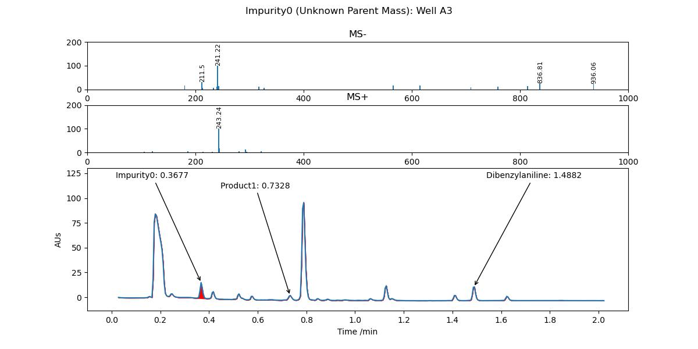
Impurity1
This impurity was observed in 20 wells.
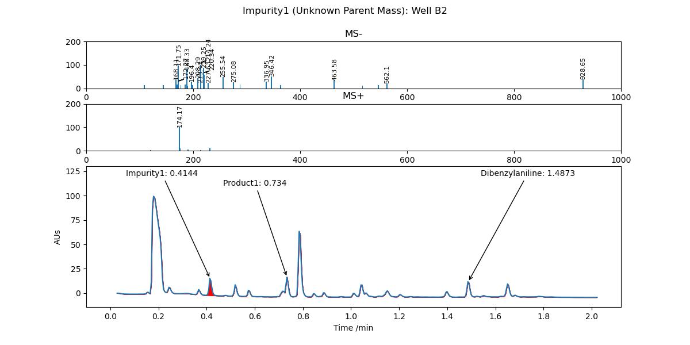
Impurity2
This impurity was observed in 10 wells.
Impurity was only observed in rows A, B, D.
Impurity was only observed in rows A, B, D.
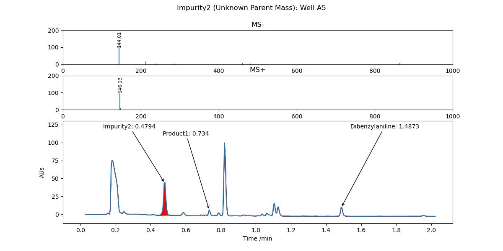
Impurity3
This impurity was observed in 8 wells.
Impurity was only observed in rows A, B.
Impurity was only observed in rows A, B.
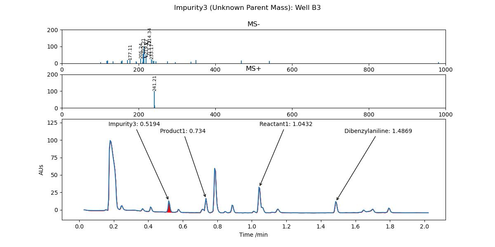
Impurity4
This impurity was observed in 15 wells.
Impurity was only observed in rows A, B.
Impurity was only observed in rows A, B.
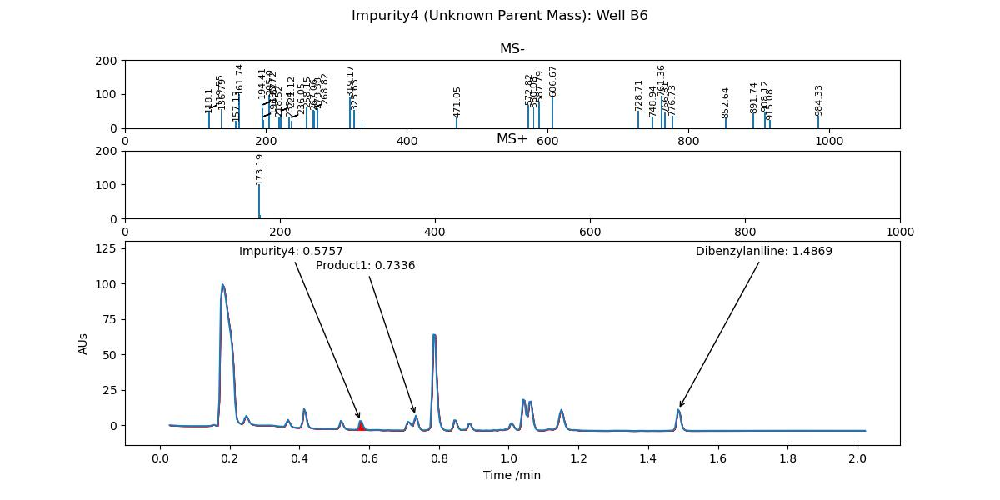
Impurity5
This impurity was observed in 24 wells.
Impurity is frequently observed in row D.
Impurity is frequently observed in row D.
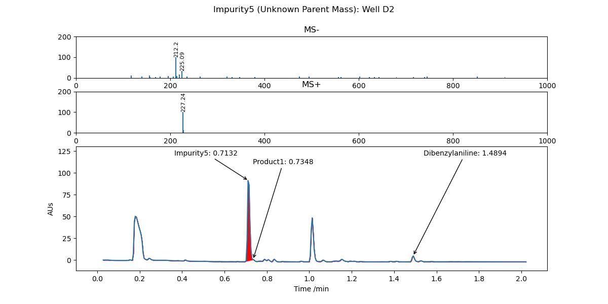
Impurity6
This impurity was observed in 48 wells.
Impurity is frequently observed in row B.
Impurity is frequently observed in row C.
Impurity is frequently observed in row D.
Impurity is frequently observed in row E.
Impurity is frequently observed in row B.
Impurity is frequently observed in row C.
Impurity is frequently observed in row D.
Impurity is frequently observed in row E.
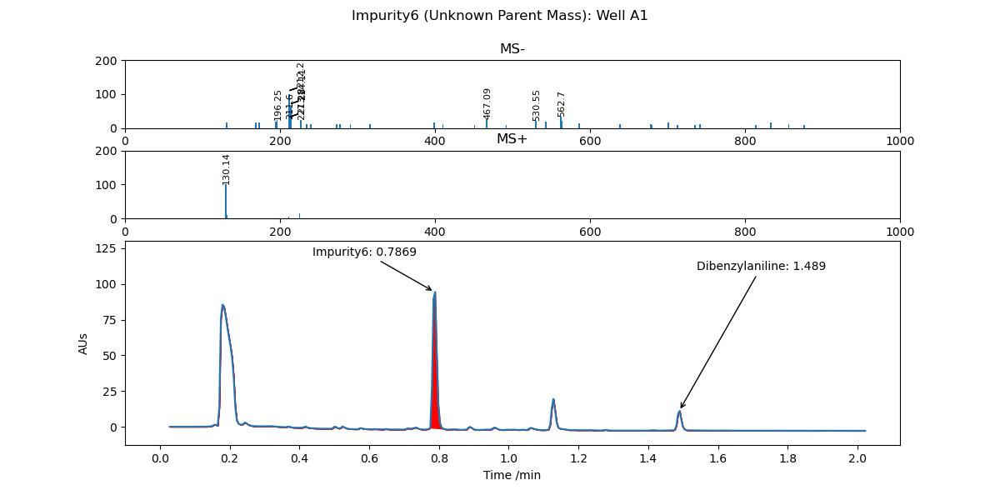
Impurity7
This impurity was observed in 16 wells.
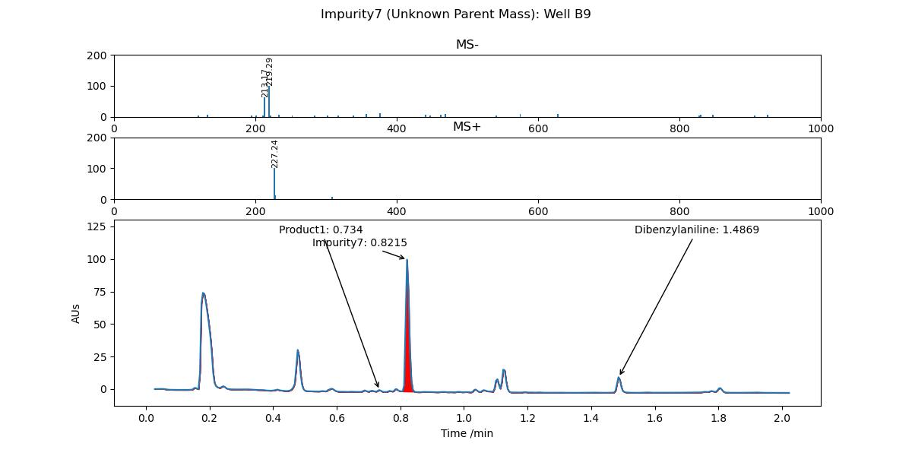
Impurity8
This impurity was observed in 10 wells.
Impurity was only observed in rows C, D.
Impurity was only observed in rows C, D.
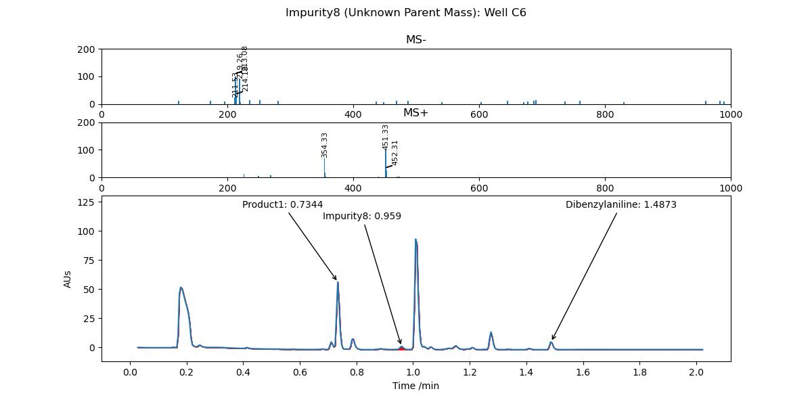
Impurity9
This impurity was observed in 32 wells.
Impurity is frequently observed in row D.
Impurity is frequently observed in row E.
Impurity is frequently observed in row D.
Impurity is frequently observed in row E.
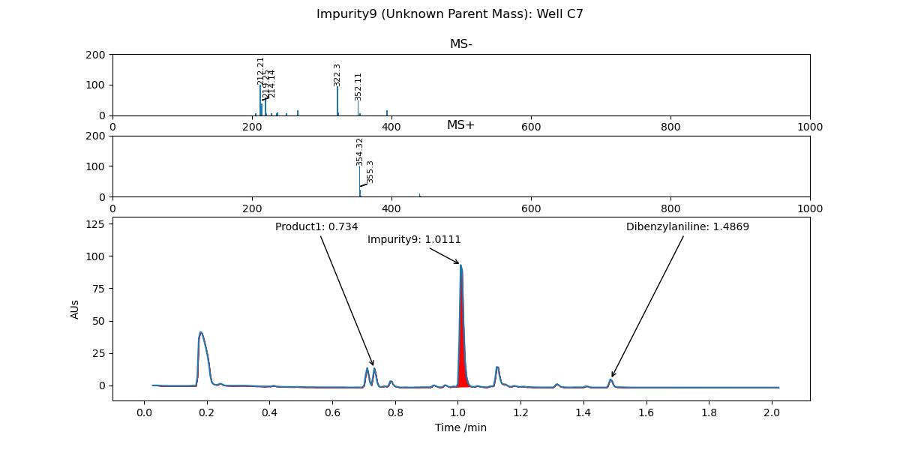
Impurity10
This impurity was observed in 34 wells.
Impurity is frequently observed in row B.
Impurity is frequently observed in row E.
Impurity is frequently observed in row B.
Impurity is frequently observed in row E.
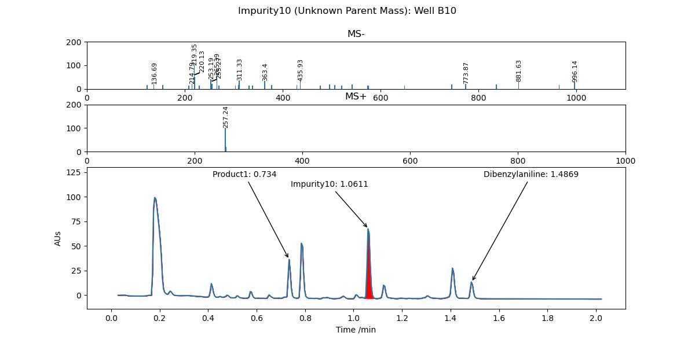
Impurity11
This impurity was observed in 38 wells.
Impurity is frequently observed in row B.
Impurity is frequently observed in row D.
Impurity is frequently observed in row B.
Impurity is frequently observed in row D.
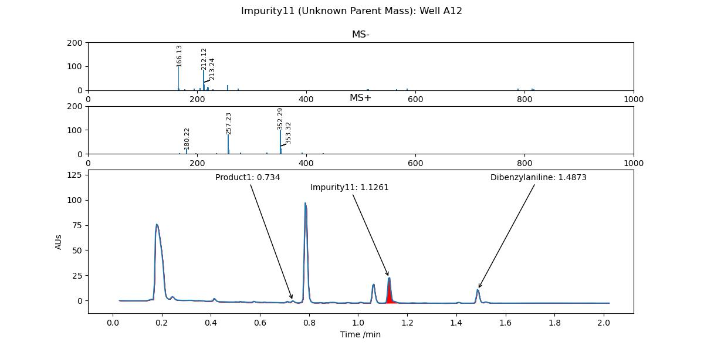
Impurity12
This impurity was observed in 14 wells.
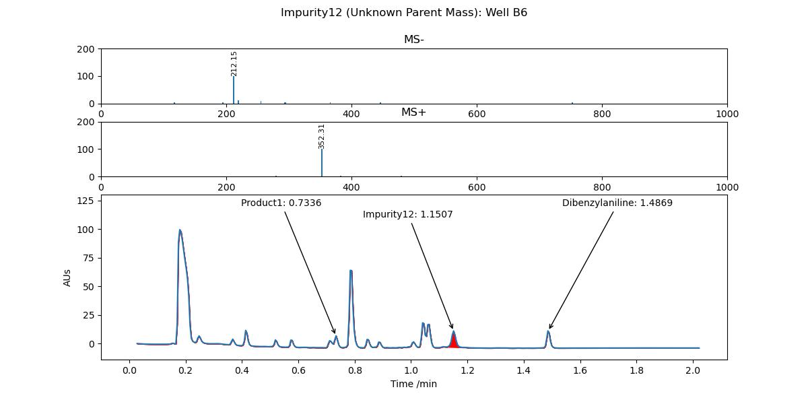
Impurity13
This impurity was observed in 7 wells.
Impurity was only observed in columns 1, 6, 8, 12.
Impurity was only observed in columns 1, 6, 8, 12.

Impurity14
This impurity was observed in 15 wells.
Impurity was only observed in rows A, B, C.
Impurity was only observed in rows A, B, C.
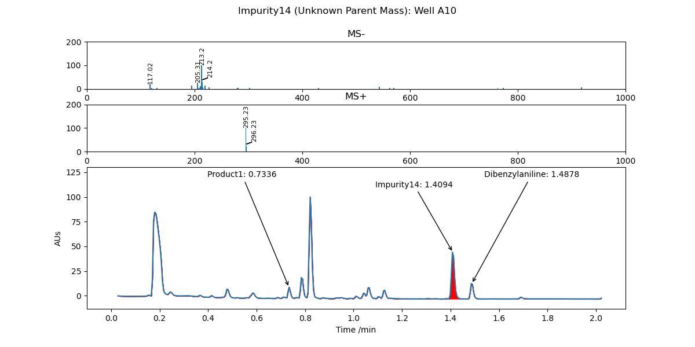
Impurity15
This impurity was observed in 7 wells.
Impurity was only observed in columns 2, 3, 7, 9.
Impurity was only observed in columns 2, 3, 7, 9.
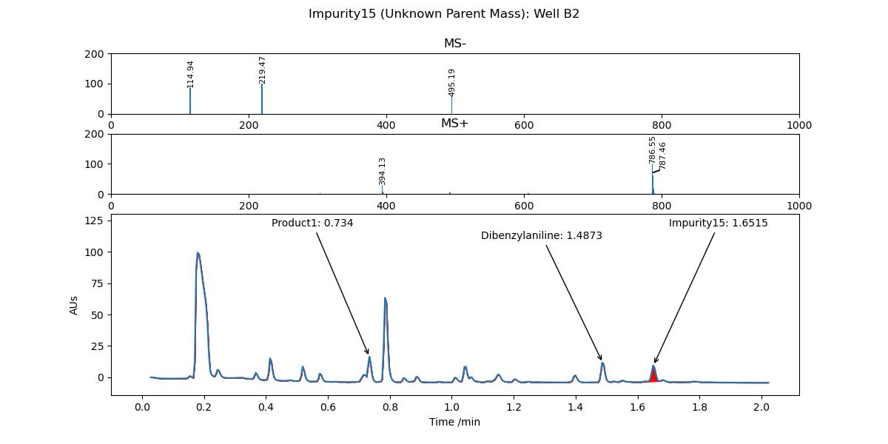
Plate Summary
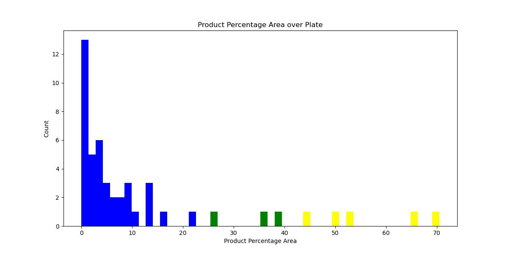
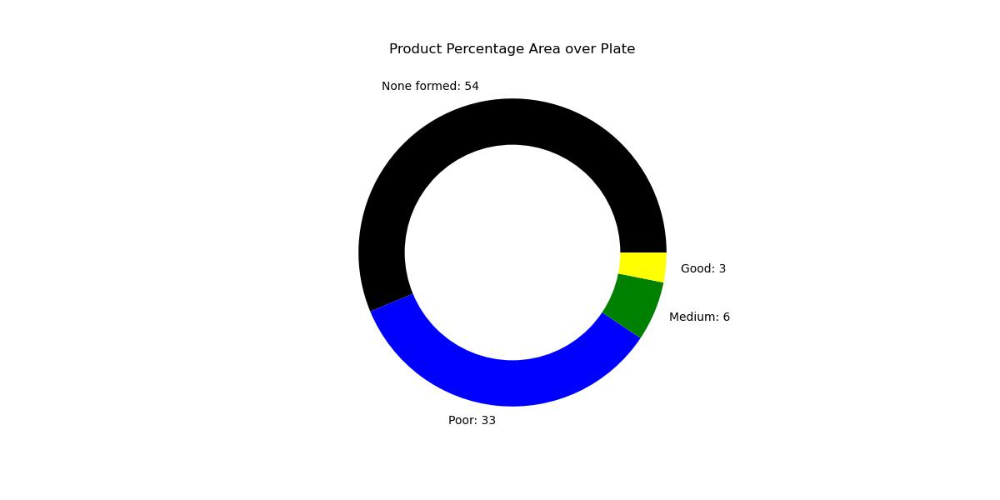
Process Summary
| Process | Time Taken |
|---|---|
| Initialise Script | 0.0 s |
| Import RPT File | 0.11 s |
| Import Compound File | 0.04 s |
| Find Hits and Validate | 0.18 s |
| Remove Duplicate Assignments | 0.0 s |
| Generate Output Table | 0.0 s |
| Plot Peaks | 0.69 s |
| Find Potential Conlicts | 0.0 s |
| Generate Heatmap | 1.19 s |
| Generate Piechart | 1.52 s |
| Generate Histogram and Donut | 0.15 s |
| Total time | 4.57 s |
Process Options
| Option Name | Value |
|---|---|
| input_data | example_dataset/Waters/Example2/LC-MS Data for 48-Well Plate.rpt |
| input_csv | example_dataset/Waters/Example2/PyParse_designer_platemap.csv |
| output | example_dataset/Waters/Example2/output_from_new_platemap |
| validate | True |
| verbose | False |
| mass_abs_tol | 0.5 |
| time_abs_tol | 0.025 |
| uv_abs_tol | 10 |
| min_peak_area | 0.5 |
| min_massconf_threshold | 10 |
| min_uv_threshold | 20 |
| uv_match_threshold | 0.5 |
| uv_cluster_threshold | 0.5 |
| massconf_threshold | 0.5 |
| cluster_size_threshold | 0.8 |
| plate_row_no | 8 |
| plate_col_no | 12 |
| min_no_of_wells | 5 |
| points_per_trace | 500 |
| mass_or_area | mass_conf |
| plot_type | Parea |
| calc_higherions | True |
| calc_boc | True |
| gen_csv | True |
| gen_zip | True |
| gen_atable | True |
| filter_by_rt | [] |
| analysis_name | PyParse Analysis |
| detector | UV |
| find_freq_imp | True |
| instrument | Waters |
Platemap for Product1

Platemap for Reactant1

Platemap for Impurity6